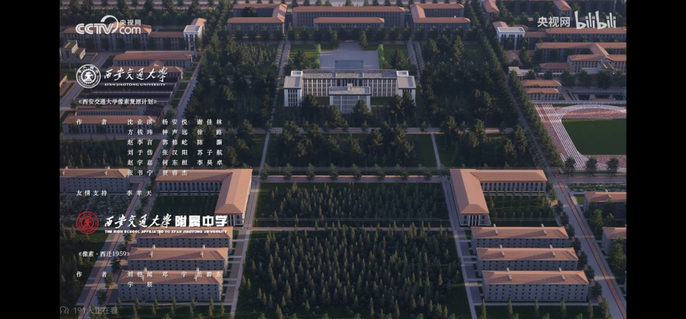
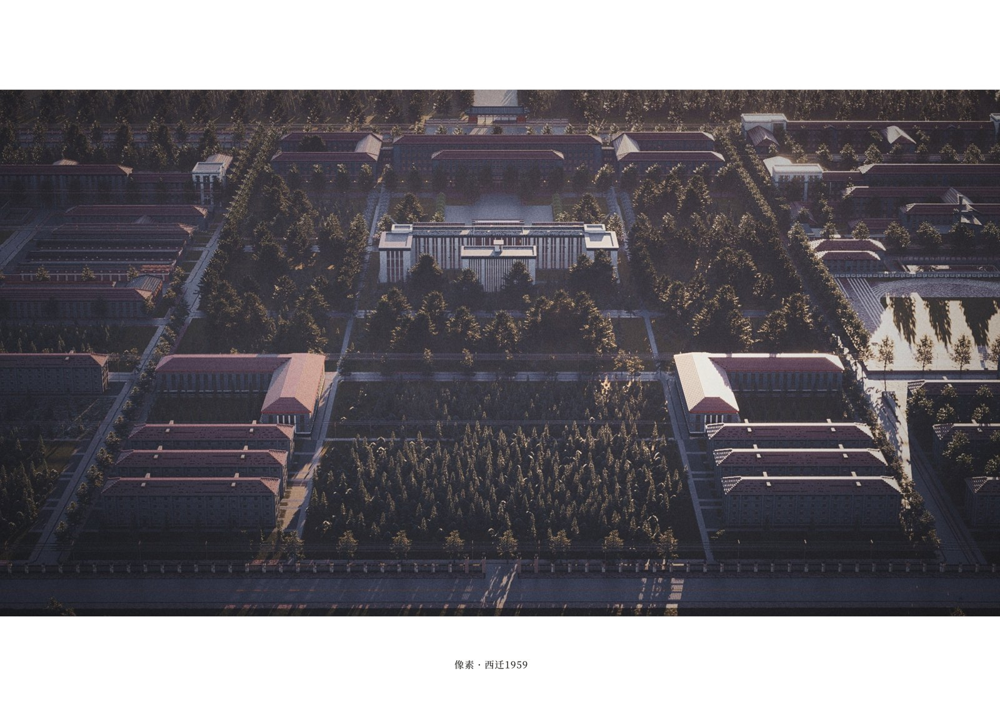
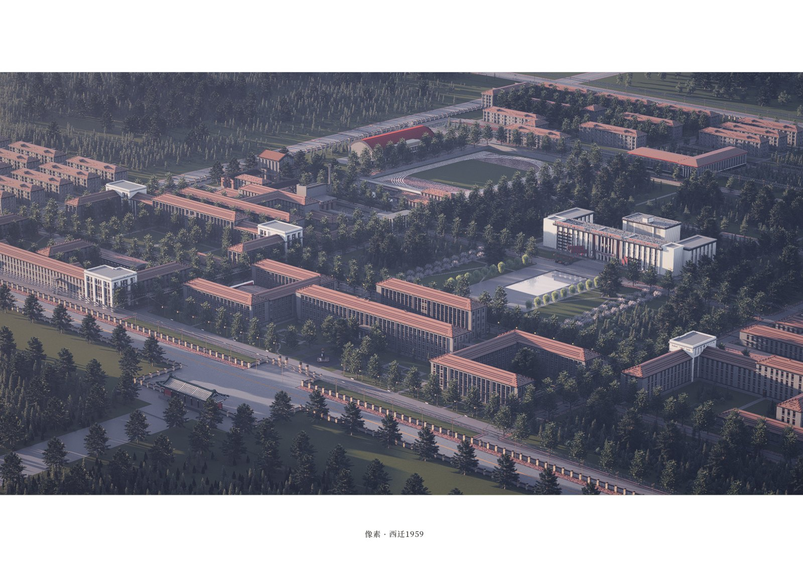
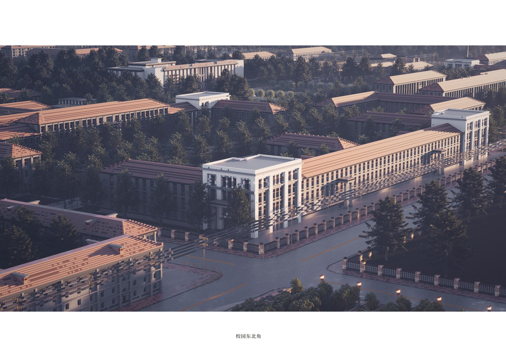
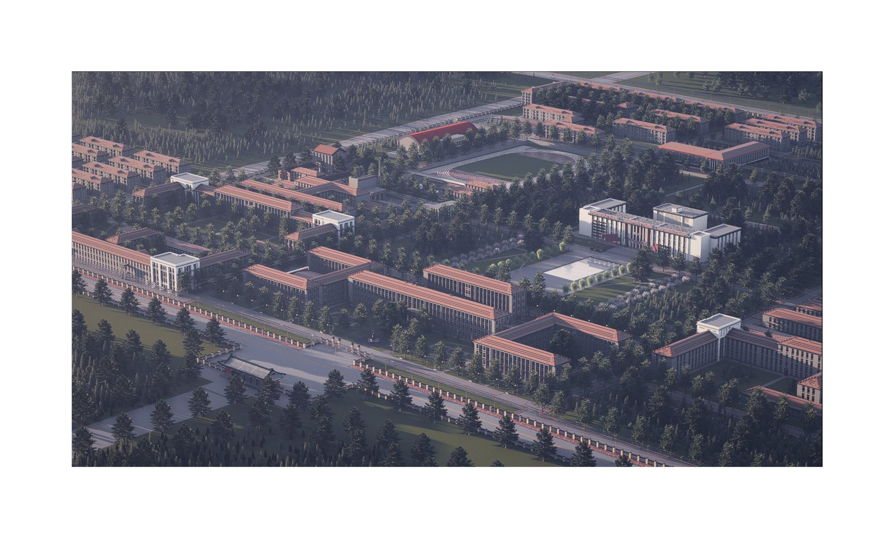
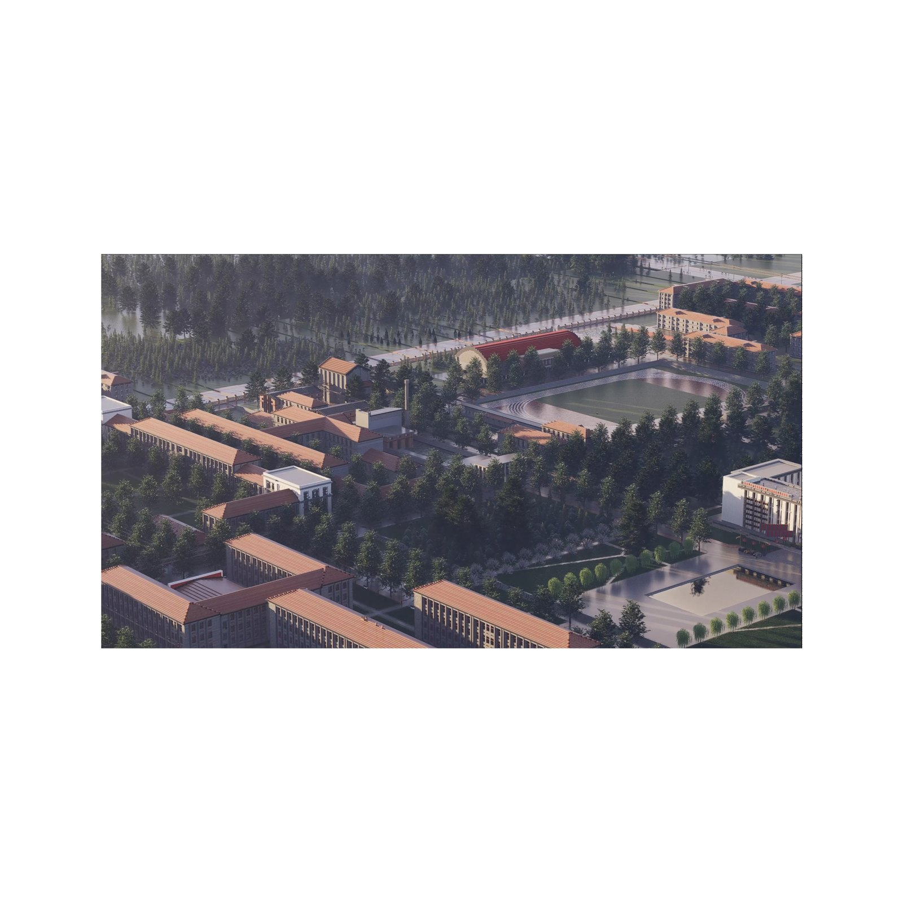
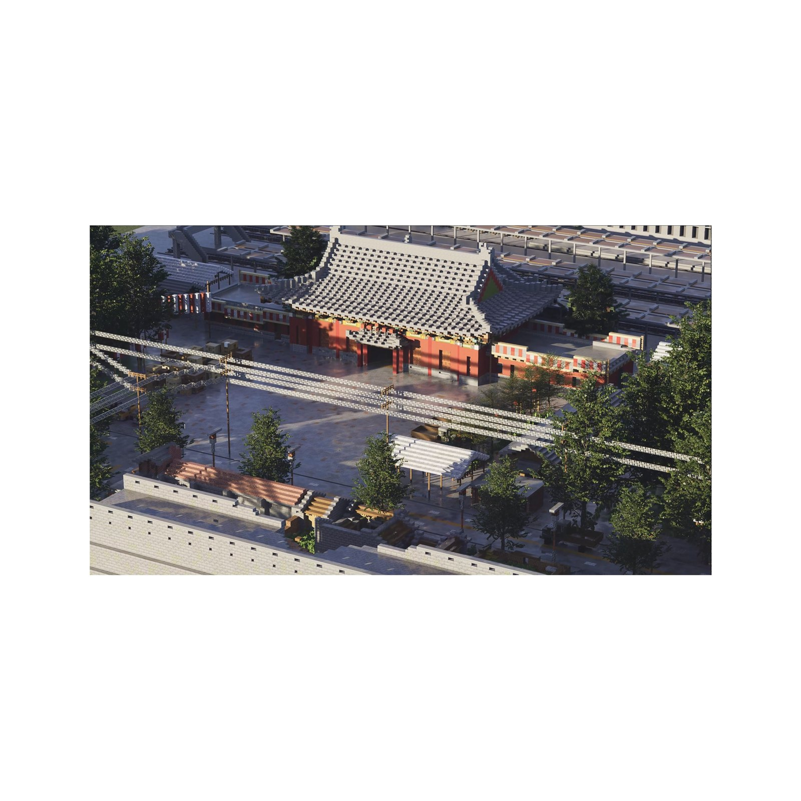
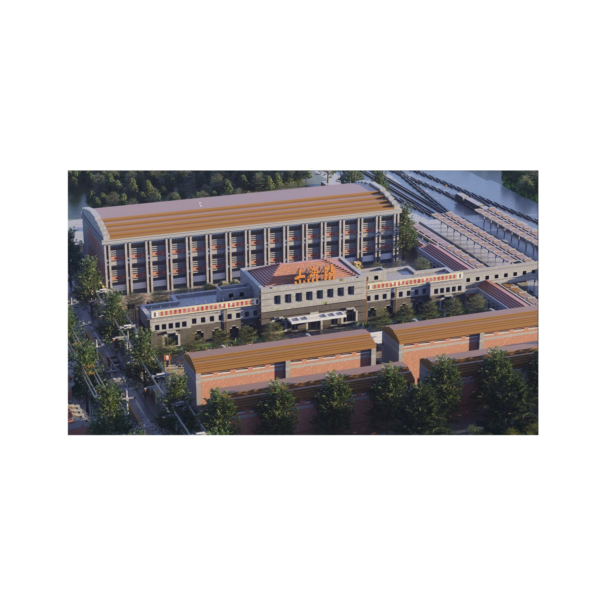

Pixel · The Road Westward recreates the 1950s campus of Xi'an Jiaotong University in Minecraft, commemorating the 1956 "Westward Migration" — when the university answered the nation's call and moved from Shanghai to Xi'an. The build reconstructs the symmetrical, Soviet-influenced campus: its central hall, tree-lined boulevards, and surrounding teaching blocks, rebuilt as a pixel monument to that generation's spirit.
像素 · 西迁之路 在 Minecraft 中重建了 1950 年代的西安交通大学校园，致敬 1956 年的"西迁"——交大响应国家号召，自上海整体迁往西安。项目重建了对称的苏式校园：中央主楼、林荫大道与四周的教学楼，以像素的方式为那一代人的精神立碑。
Produced for CCTV.com's《我和我的大学》(My University and Me) campaign on bilibili, in collaboration with the MUA Minecraft creative community. The release reached 410,000+ views.
项目为央视网《我和我的大学》（B 站）活动制作，联合 MUA 我的世界创作社区共同完成。作品发布后获得 410,000+ 次观看。







